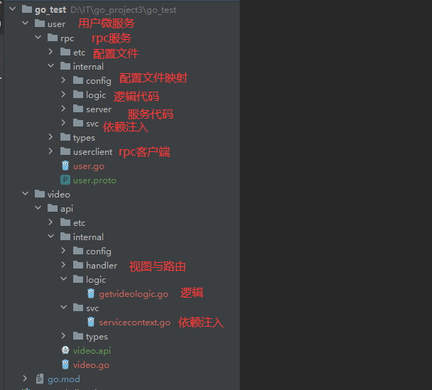

go-zero：用户与视频微服务
这节课，务必跟着教程走，先将demo成功跑起来
这个demo是一个用户微服务，一个视频微服务
视频微服务需要提供一个http接口，用户查询一个视频的信息，并且把关联用户id的用户名也查出来
那么用户微服务就要提供一个方法，根据用户id返回用户信息
用户微服务
- 编写rpc的proto文件
- 使用 user.go文件可以直接上传
Protocol Buffers复制代码
syntax = "proto3";
package user;
option go_package = "./user";
message IdRequest {
string id = 1;
}
message UserResponse {
// 用户id
string id = 1;
// 用户名称
string name = 2;
// 用户性别
bool gender = 3;
}
service User {
rpc getUser(IdRequest) returns(UserResponse);
}
// goctl rpc protoc user/rpc/user.proto --go_out=user/rpc/types --go-grpc_out=user/rpc/types --zrpc_out=user/rpc/
- 生成代码
Go复制代码
goctl rpc protoc user/rpc/user.proto --go_out=user/rpc/types --go-grpc_out=user/rpc/types --zrpc_out=user/rpc/
goctl rpc protoc user.proto --go_out=types --go-grpc_out=types --zrpc_out=.
- 在
user/rpc/internal/logic/getuserlogic.go填写必要的逻辑
Go复制代码
func (l *GetUserLogic) GetUser(in *user.IdRequest) (*user.UserResponse, error) {
// todo: add your logic here and delete this line
return &user.UserResponse{
Id: in.Id,
Name: "湖南省，长沙市",
Gender: true,
}, nil
}
在etc文件中调整自己所需要的端口和内容 :
最后在terminal终端中 写入 : go mod tidy ; 把需要安装的包实现载入;
然后直接运行 user.go实现部署 ;
video微服务
- 创建api
video/api/video.api
Go复制代码
type (
VideoReq {
Id string `path:"id"`
}
VideoRes {
Id string `json:"id"`
Name string `json:"name"`
}
)
service video {
@handler getVideo
get /api/videos/:id (VideoReq) returns (VideoRes)
}
// goctl api go -api video/api/video.api -dir video/api/
- 生成代码
Go复制代码
goctl api go -api C:\Users\17hwliao\GolandProjects\go_zero\user\video\api\video.api -dir C:\Users\17hwliao\GolandProjects\go_zero\user\video\api
- 添加user rpc配置
因为要在video里面调用user的rpc服务
video/api/internal/config/config.go
Go复制代码
package config
import (
"github.com/zeromicro/go-zero/rest"
"github.com/zeromicro/go-zero/zrpc"
)
type Config struct {
rest.RestConf
UserRpc zrpc.RpcClientConf
}
- 完善服务依赖
video/api/internal/svc/servicecontext.go
Go复制代码
package svc
import (
"github.com/zeromicro/go-zero/zrpc"
"go_test/user/rpc/userclient"
"go_test/video/api/internal/config"
)
type ServiceContext struct {
Config config.Config
UserRpc userclient.User
}
func NewServiceContext(c config.Config) *ServiceContext {
return &ServiceContext{
Config: c,
UserRpc: userclient.NewUser(zrpc.MustNewClient(c.UserRpc)),
}
}
- 添加yaml配置
video/api/etc/video.yaml
YAML复制代码
Name: video
Host: 0.0.0.0
Port: 8888
UserRpc:
Etcd:
Hosts:
- 127.0.0.1:2379
Key: user.rpc
- 完善服务依赖
video/api/internal/logic/getvideologic.go
Go复制代码
func (l *GetVideoLogic) GetVideo(req *types.VideoReq) (resp *types.VideoRes, err error) {
// todo: add your logic here and delete this line
user1, err := l.svcCtx.UserRpc.GetUser(l.ctx, &user.IdRequest{
Id: "1",
})
if err != nil {
return nil, err
}
return &types.VideoRes{
Id: req.Id,
Name: user1.Name,
}, nil
}
服务启动
运行user rpc
Go复制代码
go run user\rpc\user.go -f user\rpc\etc\user.yaml
运行video api
Go复制代码
go run video\api\video.go -f video\api\etc\video.yaml
请求
Go复制代码
curl 127.0.0.1:8888/api/videos/1
{"id":"1","name":"湖南省，长沙市"}
这样就大功告成了
知识回顾
回顾一下，我们做了哪些操作
- 编写用户微服务的rpc服务的proto文件
- 生成代码
- 添加自己的逻辑
- 编写视频微服务的api服务的api文件
- 生成代码
- 完善依赖，配置
- 添加自己的逻辑
这就是使用go-zero的好处，让我们专注于业务的开发
生成并修改之后的目录
